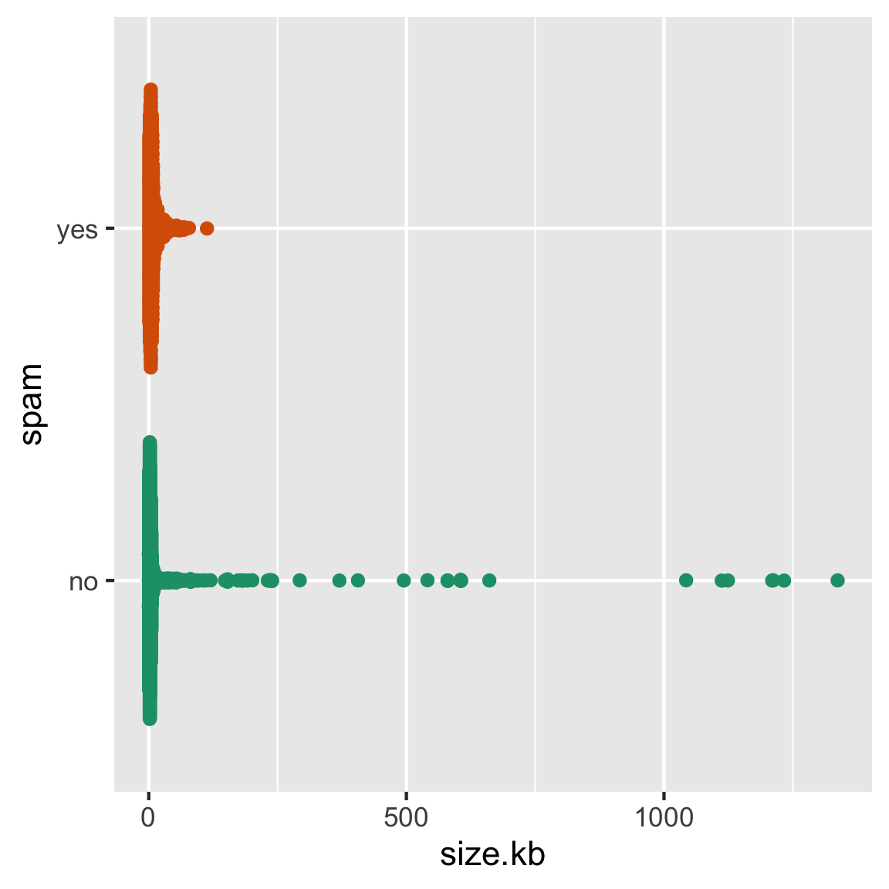
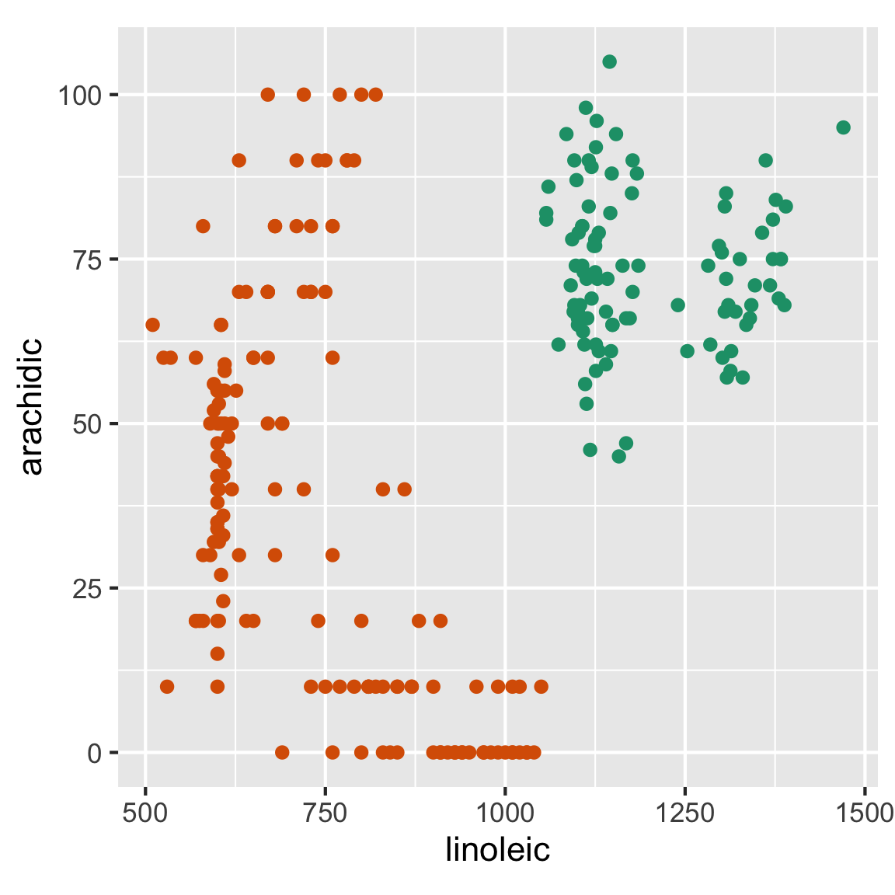

ETC3250: Tutorial 2 Help Sheet
Flux
Join this weeks flux using this link
Exercises
Question 1
Part A to E
- What is \(X_1\) (variable 1)?
- What is observation 3?
- What is \(n\)?
- What is \(p\)?
- What is \(X^\top\)?
The notation section of the matricies wiki page might also help. The wiki page should also have a definition of the transpose.
Part F
- Write a projection matrix which would generate a 2D projection where the first data projection has variables 1 and 4 combined equally, and the second data projection has one third of variable 2 and two thirds of 5.
I would reccomend checking this page of the Cook and Laa textbook for the requirements of a projection matrix. Remember, matricies are just a simple way to describe a system of linear equations.
I would suggest writing the matrix that combines the variables correctly and then make sure it follows the gneeral requirements for a projection matrix. The projected data (\(Y\)) should have dimension 1 equally variable 1 and variable 4, that is to say \(Y_1 = \frac1 2 X_1 + \frac1 2 X_4\) and dimension 2 should be a third variable 2 and two thirds variable 5, that is \(Y_2 = \frac1 3 X_2 + \frac 2 3 X_5\). Write these equations in matrix form to get a starting point for your answer.
The matrix equation that represents that linear system above is:
\[\begin{align*} {\mathbf Y = \mathbf{XA}} = \left[\begin{array}{rrrrr} 2 & -2 & -8 & 6 & -7 \\ 6 & 6 & -4 & 9 & 6 \\ 5 & 4 & 3 & -7 & 8 \\ 1 & -7 & 6 & 7 & -1 \end{array}\right] \left[\begin{array}{rr} 1/2 & 0 \\ 0 & 1/3 \\ 0 & 0 \\ 1/2 & 0 \\ 0 & 2/3 \\ \end{array}\right] \end{align*}\]
This matrix has not been adjusted to fulfill the requirements of a projection matrix. If you are unsure how to convert this into a projection matrix, check the hints for Part G.
Part G
- Why can’t the following matrix considered a projection matrix?
\[\begin{align*} {\mathbf A} = \left[\begin{array}{rr} -1/\sqrt{2} & 1/\sqrt{3} \\ 0 & 0 \\ 1/\sqrt{2} & 0 \\ 0 & \sqrt{2}/\sqrt{3} \\ \end{array}\right] \end{align*}\]
(same as Hint 1 Part F) Check week 1 lecture slides 19 to 24
(same as Hint 2 Part F) I would recommend checking this page of the Cook and Laa textbook for the requirements of a projection matrix. Remember, matricies are just a simple way to describe a system of linear equations.
The requirements for any projection matrix are: 1) The projected data should be a 2D matrix with n observations. Therefore the projection matrix has a specific dimensionality according to the rules of matrix multiplication which can be found on the wiki page.
2) The projection matrix should be orthonormal which means each column should be orthonomal with the other columns in the matrix. Remember, a vector cannot be orthogonal to itself.
The requirements for any projection matrix are (more specifically): 1) Since the data is \(n \times p\) and the projected data needs to be needs to be \(n \times p\) the projection matrix should have the dimension \(p \times d\). In this case, \(d=2\) 2) Since \(d=2\) you only need to check each column is normalised (this will be two calculations) and the two columns are orthogonal to each other (this is just one calculation). A vector is normalised if it has a length of 1, i.e. \(\sqrt{a_{11}^2 + a_{12}^2 + ... + a_{1n}^2}=1\). Two vectors are orthogonal to each other if their dot product is 0. That is, for columns i and j (where \(i \neq j\)) they need to satisfy: \[a_i \cdot a_j = \sum_k^n(a_{ik} \times a_{jk}) = 0 \] If you are unfamiliar with summation notation, this is just: \[(a_{i1} \times a_{j1}) + (a_{i2} \times a_{j2}) + ... + (a_{in} \times a_{jn}) = 0\]
Question 2
Which of these statements is the most accurate? And which is the most precise?
A. It is almost certain to rain in the next week.
B. It is 90% likely to get at least 10mm of rain tomorrow.
Check week 1 lecture slide 26 to see a diagram that depicts the difference between accuracy and precision
Accuracy tells you how likely a statement is to be true, and precision tells you how specific a statement is. For example, if I guess your weight to be somewhere between 0 and 1000kg, my statement is highly accurate (true with 100% certainty) but imprecise to the point of being meaningless. Typically a more accurate statement will be less precise, and a more precise statement will be less accurate.
Question 3
For the following data, make an appropriate training test split of 60:40. The response variable is cause. Demonstrate that you have made an appropriate split.
library(readr)
library(dplyr)
library(rsample)
bushfires <- read_csv("https://raw.githubusercontent.com/dicook/mulgar_book/pdf/data/bushfires_2019-2020.csv")
bushfires |> count(cause)# A tibble: 4 × 2
cause n
<chr> <int>
1 accident 138
2 arson 37
3 burning_off 9
4 lightning 838If you want to get the same results as the solution (and the flux quiz) use set.seed(1156)
Check the function initial_split with ?initial_split. Also look at the functions training and count to check your split and see how many are in each group.
Your function should use the options initial_split(data, prop=??, strata=??) to set an initial split. Then using testing(split) |> count(same variable you used for strata) to check the correct amount is in each group.
Question 4
In the lecture slides from week 1 on bias vs variance, these four images were shown.
(the images are in the tutorial, I’m not going to move them here)
Mark the images with the labels “true model”, “fitted model”, “bias”. Then explain in your own words why the different model shown in each has (potentially) large bias or small bias, and small variance or large variance.
The data in the images is testing data, so the model was not trained on it. Additionally, there is no error in the data generating process, that is to say, generated data is perfectly categorised according to the true model. Keep this in mind when considering the source of the error.
Chapter 2 of the ISLR textbook is of particular use for questions that require an understanding of the bias/variance trade off, such as this one.
The black line is the true boundary (that generates the data), the colored dots show what the model has predicted. There is no noise so the wave function should perfectly categorise the observations.
Look for areas where there is error in the model (i.e. the coloured dots diverge from the from the true model) and try to work out what is causing them. Is the error bias, variance or irreducible? Try to explain if there is any common themes in the errors in the images.
The black Bias is caused by an inflexible model, variance is caused by a model that is too flexible. Error from bias will be predictable and consistent sources of error, error from variance will be inconsistent and hard to differentiate from irreduciable error. Error from bias is always visible in the images, error from variance only exists in repeated samples, however you should still mention it if you have used a highly flexible model.
Question 5
The following data contains true class and predictive probabilities for a model fit. Answer the questions below for this data.
pred_data <- read_csv("https://raw.githubusercontent.com/numbats/iml/master/data/pred_data.csv") |>
mutate(true = factor(true))Part A
How many classes?
Try using count() or table() or a similar function you are familiar with.
Part B
Compute the confusion table, using the maximum predictive probability to label the observation.
You have been given data that contains the true class, the probability an observation is class Adelie and the probability an observation is class Chinstrap. You need to make a new variable that represents the predicted class and add it to your data set. Then you need to use the predicted class and the true class to make a confusion matrix.
First use mutate() to add the predicted class to your data frame
The theory and code used to make a confusion matrix from a data set with the true and predicted values is shown on lecture 1 slides 30 to 31.
Part C
Compute the accuracy, and accuracy if all observations were classified as Adelie. Why is the accuracy almost as good when all observations are predicted to be the majority class?
Check lecture 1 slides 30 to 31. It shows you how to calculate accuracy by hand and with code.
To calculate the accuracy if if all observations were classified as Adelie, you can either use the formula on slide 30, or add a new variable where all the predictions are Adelie and calculate it with the code on slide 31.
Part D
Compute the balanced accuracy when all observations were classified as Adelie, by averaging the class errors. Why is it lower than the overall accuracy? Which is the better accuracy to use to reflect the ability to classify this data?
Again, check lecture 1 slides 30 to 31. It shows you how to calculate the balaced accuracy by hand and with code.
Question 6
This question relates to feature engineering, creating better variables on which to build your model.
library(ggplot2)
library(ggbeeswarm)
spam <- read_csv("http://ggobi.org/book/data/spam.csv")
ggplot(spam, aes(x=spam, y=size.kb, colour=spam)) +
geom_quasirandom() +
scale_color_brewer("", palette = "Dark2") +
coord_flip() +
theme(legend.position="none")
Part A
The following spam data has a heavily skewed distribution for the size of the email message. How would you transform this variable to better see differences between spam and ham emails?
Check lecture 1 slides 43. You can replace the skewed variable with its transformed version, however it is better practice to leave your data as is and only transform it in the model (or in this case, in the visualisation).
Try adding scale_y_log10() to the ggplot that generated the visual.
Part B
For the following data, how would you construct a new single variable which would capture the difference between the two classes using a linear model?
olive <- read_csv("http://ggobi.org/book/data/olive.csv") |>
dplyr::filter(region != 1) |>
dplyr::select(region, arachidic, linoleic) |>
mutate(region = factor(region))
ggplot(olive, aes(x=linoleic,
y=arachidic,
colour=region)) +
geom_point() +
scale_color_brewer("", palette = "Dark2") +
theme(legend.position="none",
aspect.ratio=1)
Start by drawing a straight line that does a good job of separating the variables. Consider how you should make a new variable that will allow you to perfectly separate the data. Consider how you made a projection matrix in question 1.
Your new variable should be perpendicular to the line that separated the variables. Once you have a function that represents that line, you can use it to make a new variable. .
Plot your new variable to see if it does a good job of separating the values
Question 7
Discuss with your neighbour, what you found the most difficult part of last week’s content. Find some material (from resources or googling) together that gives alternative explanations that make it clearer.